A / RGB 314×206 / generated, unselected
Authorization Archive
scenes:biology_park/authorization_archiveAn orderly archive in the tower office: early signatures, later approval stamps, Specimen 001 records and automatic paper equipment.
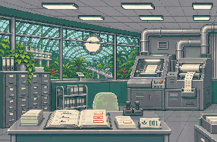
Seven generated candidates · selection pending
Batch 2 has final owner approval and is registered in the public selected-art system. These seven new Batch 3 images remain generated and unselected. All previously approved pixels are preserved.
Detailed sources are retained at 1548×1016. Each native candidate is opaque RGB 314×206 using the established 64-color palette. The 1256×824 files are exact 4× review previews. Gameplay PMO should use the native candidate and nearest-neighbor rendering with smoothing disabled.
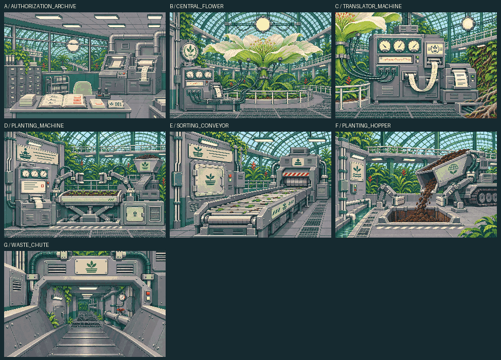
scenes:biology_park/authorization_archiveAn orderly archive in the tower office: early signatures, later approval stamps, Specimen 001 records and automatic paper equipment.

scenes:biology_park/central_flowerA greenhouse-spanning natural bloom, physiological sensors, thick cables, administrative printers and the district seal. No humanlike face.
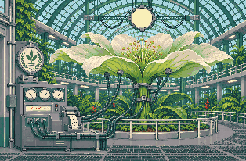
scenes:biology_park/translator_machineThe connected translator rack: perforated tape, approval reader and output printer in their normal processing state. Roots still conceal the later service door.
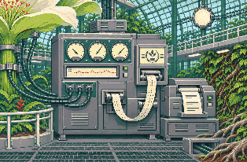
scenes:biology_park/planting_machineOpposing padded mechanical arms, a shallow planting bed on a lift, a separate disposal hatch and service grille.
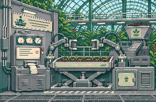
scenes:biology_park/sorting_conveyorA roller sorting conveyor leading to a compactor, with a high inspection hatch beside it.
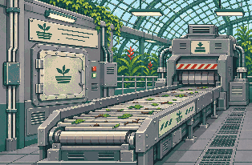
scenes:biology_park/planting_hopperThe Groundskeeper hopper tips soil into a prepared pit beside an accessible irrigation trench; packing arms remain poised.
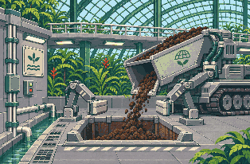
scenes:biology_park/waste_chuteA sloping disposal trough opens into a low irrigation service passage with utility pipes, a gauge and limited roots.
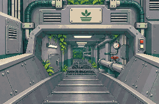
Approved Batch 1 and Batch 2 references are exact copied PNGs, checked against their recorded hashes. New machinery scenes retain distinct narrative functions. The final comparison documents a correction confined to an unselected Batch 3 generation.
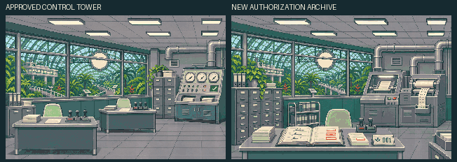
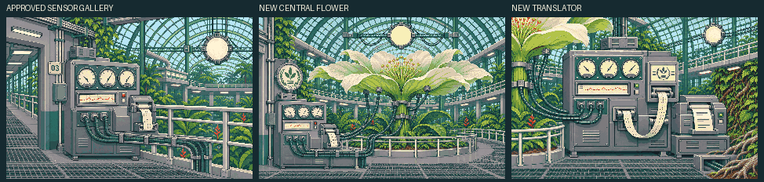
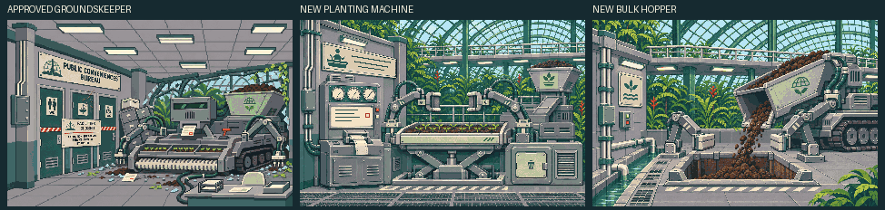
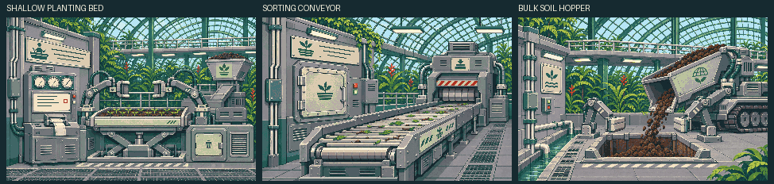
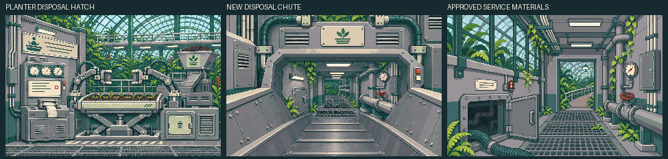
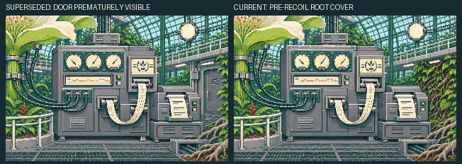

The initial generation exposed a service door before the cable-recoil event. A built-in image edit covers that background door with roots and vines. Both raw generations and prompts are preserved. The unfinished lower duct remains visible.
Superseded original · Current original · Targeted edit prompt
Unreadable generated microlettering is replaced by deliberate administrative bars and a small status stamp, with sign pictograms preserved. The change masks prove zero modifications outside the recorded notice regions.
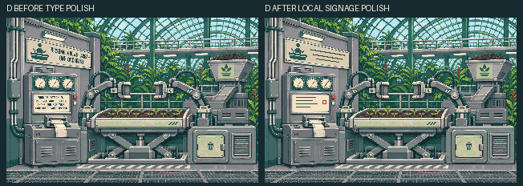
D allowed region · D changed pixels
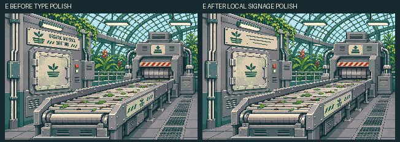